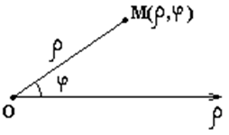

6.5.1*. Полярные координаты на плоскости

Полярные координаты определяются заданием на плоскости
полюса  и полярной оси
и полярной оси  .
.
и полярной оси .Координаты точки  в
полярных координатах задаются длиной радиус-вектора
в
полярных координатах задаются длиной радиус-вектора  этой
точки и углом его наклона к полярной оси. При этом .
этой
точки и углом его наклона к полярной оси. При этом .
в
полярных координатах задаются длиной радиус-вектора этой
точки и углом его наклона к полярной оси. При этом .